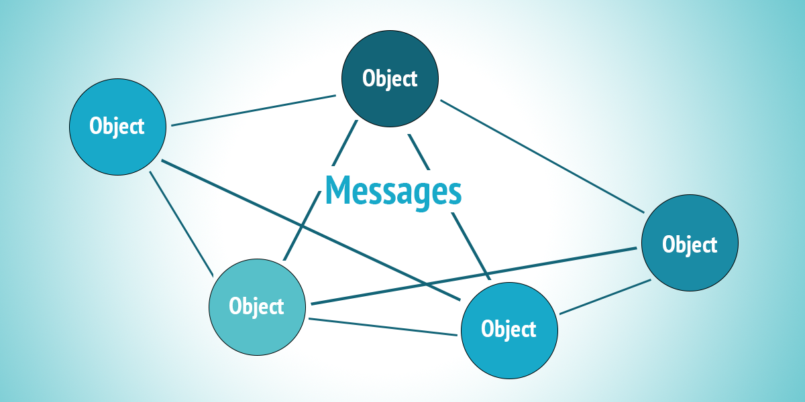

ООП във функционален език
Предния път
- Типова йеархия.
Any,AnyVal,AnyRef,Unit,Null,Nothing - “Чисти” контролни структури – if, pattern matching, for
- “Нечисти” (референтно непрозрачни) контролни структури – while, try/catch, side-effecting for
- Съставни структури – n-торки,
Range,List,Set,Map - Функционално и императивно програмиране – що са те?
- Модели на изчисление
Задача
Напишете функция, проверяваща, че скобите в един израз са балансирани
Обектно-ориентирано програмиране
?
Кой е това?
Кой е това?

Alan Kay
предлага термина ООП (c. 1967)
ООП?
“I made up the term ‘object-oriented’, and I can tell you I didn’t have C++ in mind.” – Alan Kay
Dr. Alan Kay on the Meaning of
“Object-Oriented Programming”
“I thought of objects being like biological cells and/or individual computers on a network, only able to communicate with messages… OOP to me means only messaging, local retention and protection and hiding of state-process, and extreme late-binding of all things.” – Alan Kay
Забележете, че не се споменават класове, наследяване и др.
В основата на ООП – съобщенията

- Множество познати ни ООП принципи (като SOLID) се фокусират върху практики за дизайн на един клас
- ООП всъщност е:
- система от обекти,
- комуникиращи помежду си
- Добър ООП дизайн обхваща цялостната комуникация и участващите обекти
- В познатите езикови ни конструкции съобщения са методите
Енкапсулация
- getter-и, setter-и, copy конструктори и т.н. НЕ са ООП
- Всъщност са антитеза на ООП
- Обектите не са структури от данни
- Енкапсулацията при обектите се отнася до това, че скриват своето състояние и структурите, които използват, от другите обекти
- Обектите си взаимодействат единствено през ясен протокол (интерфейс/възможни съобщения) – поведение на обекта
- При ООП липсва споделено състояние
Енкапсулация - пример
Range, List, Set, Map – всеки има напълно различна имплементация, но общ протокол на комункация
Комуникация в биологията
(паралел)
- Нашето тяло е сложна система от комуникиращи си клетки/органи/…
- Различни среди на комуникация
- хормони
- сигнали по нервната система
- дори вътре в клетката – ядрото изпраща messenger RNA към рибозомите
Late Binding
- Конкретното поведение, което ще се изпълни, се разбира едва по време на изпълнение
- Подтиповия полиморфизъм е един аспект на late binding
- В по-голям мащаб: подмяна на части от системата без да се спира цялата система
ООП + ФП?
- ООП не предполага странични ефекти
- Може да се използва по immutable и функционален подход
“So: both OOP and functional computation can be completely compatible (and should be!). There is no reason to munge state in objects, and there is no reason to invent “monads” in FP. We just have to realize that “computers are simulators” and figure out what to simulate." – Alan Kay
“I will be giving a talk on these ideas in July in Amsterdam (at the ‘CurryOn’ conference).”
Не дойде 😭
ООП и дистрибутирани системи
- Алан Кей говори за ООП в контекста на компютри в мрежа
- Дистрибутираните системи са недетерминирани по природа
- Но дори при тях ФП може да помогне много
- Езици като Erlang ги моделират по възможно най-функционален подход
- обекти (а.к.а. процеси/актьори) със чисто функционално поведение
- недерменирана комуникация чрез съобщения между тях
- В Scala – библиотеката Akka
- Тема на друг курс (но е възможно да я засегнем мъничко)
ООП в Scala
- Типизация
- Класове, обекти, интерфейси и др.
- Uniform Access Principle
- Модулярност чрез ООП конструкции
- Подтипов полиморфизъм и late binding
- Scala и the expression problem?
- Extension методи
Дефиниране на клас
- Параметри на клас – конструктор
- Членове
- Модификатори на достъп
Да дефинираме клас Rational
Дефиниране на обект
apply методи
Всеки обект с apply метод може да бъде използван като функция:
apply методи
Обекти-другарчета (придружаващи/companion обекти)
- В Scala класовете нямат статични методи
- Вместо това помощни функции могат да бъдат дефинирани в техните придружаващи обекти 🤝
- Обект придружава клас, ако
- е дефиниран със същото име като класа и
- се намира в същия файл
Обекти-другарчета (придружаващи/companion обекти)
class Rational {
// ...
}
object Rational {
val Zero = Rational(0) // използва apply, дефиниран долу
def apply(n: Int, d: Int = 1) = new Rational(n, d)
def sum(rationals: Rational*): Rational =
if (rationals.isEmpty) Zero
else rationals.head + sum(rationals.tail)
}
Rational.sum(Rational(1, 2), Rational(5), Rational(3, 5)) // вече не е нужно да пишем newПридружаващи обекти
List(1, 2, 3) се свежда до List.apply(1, 2, 3),
което е функция с променлив брой параметри
Придружаващи обекти
Имат достъп и до private/protected членовете:
implicit конверсия
implicit конверсия
implicit def intToRational(n: Int): Rational = Rational(n)
Rational(2, 3) + 1 // Rational(5, 3)
1 + Rational(2, 3) // Rational(5, 3), също работиПреобразува се до:
Когато компилаторът не открие метод с очакваните име и параметри
решава да потърси за възможна имплицитна конверсия към тип,
който има този метод
implicit конверсия – ред на търсене
- В текущия scope (чрез текущ или външен блок или чрез import)
- В продружаващия обект на който и да е от участващите типове
Още за implicit конверсии
- Добре е да се ограничават
- Изискват
import scala.language.implicitConversions - Препоръчително е използването на конверсии с по-конкретни типове пред по-общи
Ctrl+Alt+Shift и +в IntelliJ показва implicit конверсиитеCtrl+Alt+Shift и -ги скрива
case класове
- неизменим value клас
- всички изброени параметри автоматично стават
valполета - автоматично генериране на:
придружаващ обект с
applyequals,hashCode,toStringcopy– позволява инстанциране на нова версия, базирана на съществуващатаоще няколко удобства – за тях по-натам
Влагане на case класове
Поведение на case класове
Универсален apply
В Scala 3 автоматично се генерира придружаващ обект с apply за всеки клас (не само за case класовете):
Абстрактни типове – trait
Абстрактни типове – trait
Uniform Access Principal
UAC – интерфейсът не се променя от това дали дадено име е имплементирано чрез ичисление (def)
или чрез съхранена стойност (val)
Uniform Access Principal и case класове
Множествено наследяване
Множествено наследяване
trait A {
def hello(to: String): String = s"Hello to $to from A"
}
trait B extends A {
override def hello(to: String): String = s"Hello to $to from B"
}
trait C extends A {
override def hello(to: String): String = s"Hello to $to from C"
}
class X extends B with C
new X().hello("FMI") // Hello to FMI from C- trait-овете по-вдясно override-ват имплементацията от trait-овете вляво
- Има възможност да работи като декорация, ако ви е любопитно попитайте ни за пример в Slack
Подтипов полиморфизъм
trait Shape {
def name: String
def area: Double
}
case class Circle(r: Double) extends Shape {
def name = "circle"
def area: Double = math.Pi * r * r
}
case class Rectangle(a: Double, b: Double) extends Shape {
def name = "rectangle"
def area: Double = a * b
}
val shape: Shape = Circle(2)
shape.area
// типът на фигурата се определя по време на изпълнение
val randomShape: Shape = getRandomShape()
randomShape.area // програмата знае коя имплементация да използваРефиниране/имплементиране на типове при инстанциране
trait параметри
import клаузи
import клаузи
import клаузи
export клаузи
Позволяват делегация:
object IntUtils {
def twice(n: Int): Int = 2 * n
def squared(n: Int): Int = n * n
}
object DoubleUtils {
def twice(n: Double): Double = 2 * n
def squared(n: Double): Double = n * n
}
object MathUtils {
export IntUtils._
export DoubleUtils._
}
MathUtils.twice(2) // 4
MathUtils.twice(2.0) // 4.0- export-натите имена стават членове на обекта
- синтактично е със същия формат като
import
export клаузи
class Scanner {
def scan(image: Image): Page = ???
def isOn: Boolean = ???
}
class Printer {
def print(page: Page): Image = ???
def isOn: Boolean = ???
}
class Copier {
private val scanner = new Scanner
private val printer = new Printer
export scanner.scan
export printer.print
def isOn = scanner.isOn && printer.isOn
}
val copier = new Copier
val image = ???
val copiedImage = copier.print(copier.scan(image))
image == copiedImage // true, hopefully :DAnyVal класове
case class PersonId(id: String) extends AnyVal
case class LocationId(id: String) extends AnyVal
def createAddressRegistration(person: PersonId, location: LocationId) = ???- не създават допълнителен обект, вместо това се репрезентират от типа, който обвиват
- носят повече type safety в някои ситуации
- обвитата стойност задължително трябва да е
valв обиващия клас - поради JVM ограничения не могат да обвият повече от едно поле
AnyVal класове
case class Meter(amount: Double) extends AnyVal {
def +(m: Meter): Meter = Meter(amount + m.amount)
def *(coefficient: Double): Meter = Meter(coefficient * amount)
override def toString = s"$amount meters"
}- техните методи се извикват статично
Типизиране – съвместимост на типове
- Номинално – типове се проверяват за съвместимост по тяхното име (и по явна релация с други имена)
- Аз съм бухал, защото са ми казали, че съм бухал
- Аз като бухал съм птица, защото всички бухали са птици
- “B наследява A”
- Структурно – съвместимост на типове се определя по структурата на обекта (по неговото поведение)
- Аз съм бухал, защото гукам като бухал и защото мога да летя
- Аз като бухал съм птица, защото мога да летя
- “B има същите методи (т.е. същата структура) като A”
Структурно типизиране в Scala
Структурно типизиране в Scala
ООП досега
- ООП като цялостна система от обекти, взаимодействащи помежду си
- Дефиниране на класове и обекти, параметри на клас
- Неизменими value/data обекти чрез case class
- Абстракции чрез trait. Uniform Access Principle
- Подтипов полиморфизъм
- implicit конверсии
- Type safety чрез обвиващи AnyVal класове
- Номинално и структурно типизиране
Типова алгебра
Scala 3 добавя обединение (|) и сечение (&) на типове
Сечение на типове
trait LovingAnimal {
def name: String
def hug = s"A hug from $name"
}
case class Owl(name: String, age: Int) {
def flyThrough(location: String): String = s"Hi, I am a $age years old owl. Hoot, hoot!"
}
val lovelyOwl: Owl & LovingAnimal = new Owl("Oliver", 7) with LovingAnimal
lovelyOwl.hug // A hug from OliverОбединение на типове
Обединение на типове
def toInteger(value: String | Int | Double): Int = value match {
case n: Int => n
case s: String => s.toInt
}|def toInteger(value: String | Int | Double): Int = value match {
| ^^^^^
| match may not be exhaustive.
|
| It would fail on pattern case: _: DoubleОбединение на типове
The Expression Problem
The goal is to define a datatype by cases, where one can add new cases to the datatype and new functions over the datatype, without recompiling existing code, and while retaining static type safety (e.g., no casts).
The Expression Problem (алтернативно)
- Добавяне на нов тип без промяна на съществуващия код
- Добавяне на нова операция без промяна на съществуващия код
ООП подход
ФП подход
trait Shape
case class Circle(r: Double) extends Shape
case class Rectangle(a: Double, b: Double) extends Shape
def area(s: Shape): Double = s match {
case Circle(r) => math.Pi * r * r
case Rectangle(a, b) => a * b
}case класовете могат да бъдат използвани в pattern matching
Добавяне на операция във ФП – лесно
Добавяне на операция в ООП – трудно, промяна на всички класове
Добавяне на тип в ООП – лесно
Добавяне на тип във ФП – трудно
case class Square(a: Double) extends Shape
def area(s: Shape): Double = s match {
case Circle(r) => math.Pi * r * r
case Rectangle(a, b) => a * b
case Square(a) => a * a
}
def circumference(s: Shape): Double = s match {
case Circle(r) => 2 * math.Pi * r
case Rectangle(a, b) => 2 * (a + b)
case Square(a) => 4 * a
}The Expression Problem
- Всеки език е добре да предоставя изразни средства и за двата проблема
- ООП подходът е подходящ за типове с предварително неизвестен брой случаи и малко основни операции
- Функционалният подход е подходящ за типове с предварително фиксирани случаи
Extension Methods
- Добавяне на методи към съществуващи типове
- Само в текущия scope
Extension Methods
Extension Methods
Extension Methods в Scala 2
- Scala 2 също позволява добавяне на методи
- Използва се механизма за implicit конверсия
Extension Methods в Scala 2
Extension Methods в Scala 2
implicit class EnrichedInt(val n: Int) extends AnyVal {
def squared = n * n
def **(exp: Double) = math.pow(n, exp)
}
3.squared // 9
2 ** 3 // 8.0Тук не е нужен import scala.language.implicitConversions
Примери от стандартната библиотека
DSL за тестове
ООП дизайн?
- книги за домейн дизайн
ООП дизайн – скрити домейн обекти
def buyTea(cc: CreditCard, paymentService: PaymentService): Tea = {
val teaCup = new Tea(...)
paymentService.charge(cc, teaCup.price)
teaCup
}Отлагане на страничния ефект =>
- скрити домейн концепции изплуват на яве (
Chargeобект) - моделираме дейности като данни
- които допълнително можем да трансформиране функционално
- купуване на n кафета и събиране на Charge-ове
- анализ на Charge-ове от различни потребители
- по-добра тестваемост